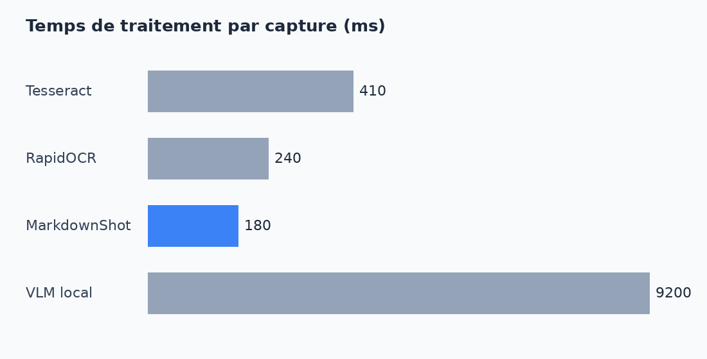

Prendre des notes à partir de captures d'écran
Chaque jour, nous lisons des dizaines d'articles sans jamais en garder une trace utile. La capture d'écran est rapide, mais une image n'est ni cherchable ni modifiable. Cet article explique comment transformer ces captures en véritables notes Markdown.
Pourquoi le Markdown ?
Le Markdown est un format texte très simple. Il reste lisible même sans logiciel, et des outils comme Obsidian l'affichent joliment. Surtout, vos notes vous appartiennent : ce sont de simples fichiers sur votre disque, que vous pouvez sauvegarder, synchroniser et modifier librement.
Les trois étapes du traitement
Un bon outil doit enchaîner plusieurs opérations sans que vous ayez à y penser :
- repérer les blocs de la page : titres, paragraphes, images ;
- lire le texte avec un moteur OCR rapide et local ;
- reconstruire la mise en forme, y compris le gras et les listes.
Le cas des images
Les images sont découpées automatiquement puis enregistrées dans le dossier des pièces jointes. Le texte contenu dans un graphique, comme celui ci-dessous, ne doit pas être recopié dans la note.

Un exemple de configuration
Voici à quoi ressemble un fichier de configuration minimal :
[sortie] dossier_notes = "C:/Vault/Captures" dossier_images = "C:/Vault/Captures/images" raccourci = "Ctrl+Shift+S"
Une note que l'on ne retrouve pas est une note perdue.
Bonnes pratiques
- Capturez uniquement la partie utile de la page.
- Relisez la note juste après la capture.
- Ajoutez quelques mots-clés pour la retrouver facilement.
En suivant ces conseils, vous construirez en quelques semaines une base de connaissances personnelle, simple à parcourir et entièrement hors ligne.